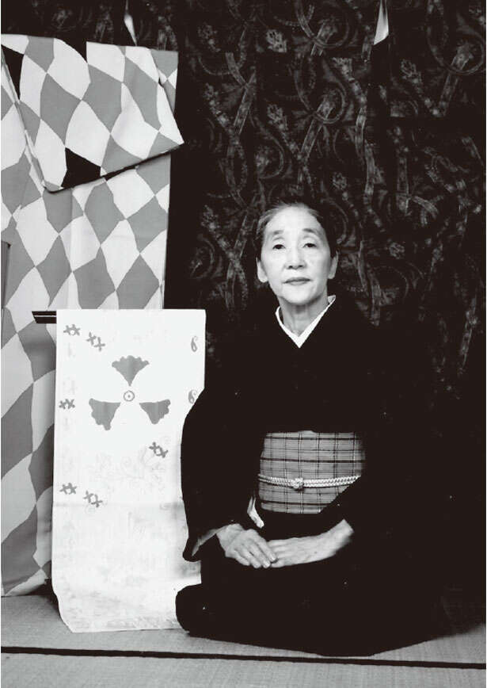

“91岁，银座和服物语” （村田明子、西端麻也/KADOKAWA）第3部分【共7部分】
银座有200年历史的小和服店。有一位女士，90岁高龄后，仍然保护着店里的窗帘，依然有尊严地站在店里。那个人就是“村田染织工艺品”的店主村田晶子。从事和服工作 70 年，担任店主 30 年。这本书“91岁，银座和服物语”《角川》是村田写的一本书，讲述了她在银座街头观察到的“和服和手工艺品”，以及她与家人的温馨时光。如何丰富而美好地度过自己的后半生。从她温柔的说话风格中就可以看出这一点。这次，我想介绍一下这本书中的一些关于和服引导的美好生活记忆的节选。
*本文摘自村田明子（作者）、西端麻也（作者）所著《91岁的银座和服物语》一书。

每日和服选择
我的房间里有三个抽屉柜，每天早上我都会站在它们面前挑选衣服。话虽如此，我对和服的选择总是很随意。当你打开抽屉时，你会拿起一件恰好引起你注意的和服，然后将它与你认为很棒的腰带搭配起来。我不会在前一天晚上做出决定，也不会深入思考今天要做什么。让一切发生，而不仅仅是和服。我喜欢随意做事。
Akiko 表演最后的舞蹈。和他的祖母 Maru 一样，他一直坚持到晚年。这张照片是我大学时代的。
当然，有时我也会选择矫正领子。例如，在石舞演奏会当天穿的和服，或者在观看石舞老师表演的能剧表演当天穿的和服。然后，在我去参加工艺品艺术家祖父和父亲的展览的那天，我决定穿和服……因此，我认为根据直觉做出决定的日子和经过深思熟虑后做出选择的日子之间有一个很好的平衡。
一旦您决定了和服和腰带，请从抽屉柜的小抽屉中选择带和腰带。两者我都喜欢纯米色，我有 19 款带子和 16 款带子，颜色略有不同。我的儿子们嘲笑并想知道有什么区别，但当然是这样。这个时候我也本能地选择了一双我认为好的。
选好服装后，就前往梳妆台。穿衣服之前，先把头发做好。听起来很简单，只需将其系在背后，缠绕起来，用别针固定，然后固定一个玳瑁发夹即可。需要不到五分钟。
它也很容易穿上。那是因为我不使用复杂的工具或进行任何调整。由于它只是一根绳子，所以根本不需要太多时间。具体步骤我稍后再说。
现在，穿好衣服后，下楼梯前往商店。以前我是疯狂地上上下下，现在我已经90多岁了，我是一步一个脚印。我的工作场所分布在推拉门之外。大窗户外是一座朴素的绿色花园。自银座店以来一直使用的架子和椅子现在采用了较深的木纹颜色。大约在 11 点商店开门前一个小时，我的二儿子 Kanji 过来了，我们热热闹闹地聊着如何把橱窗里的布料拆下来换成印花布包，如何为夏季服装展制作明信片，以及他想如何在 Instagram 上发布今天妈妈的和服和腰带。新的一天开始了。